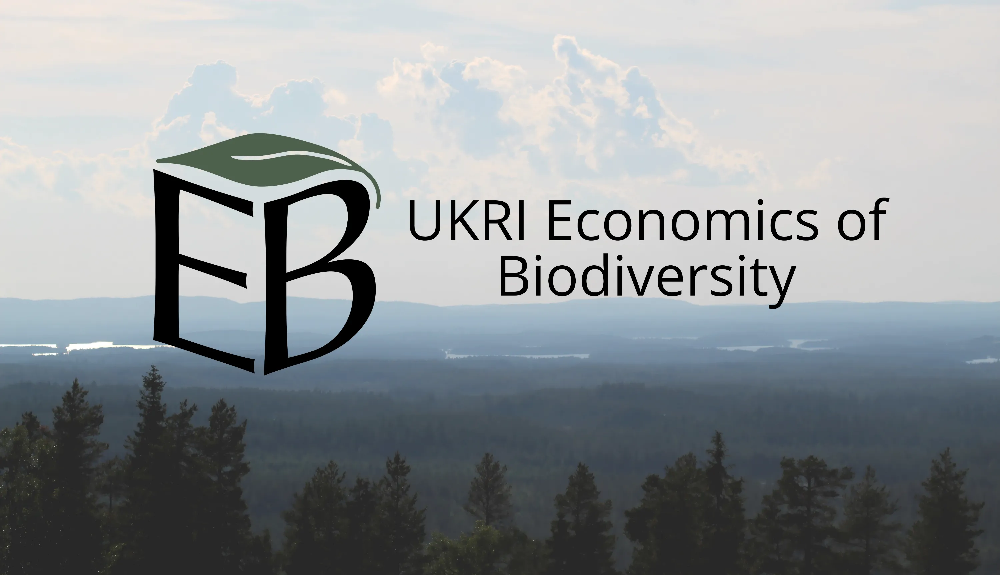
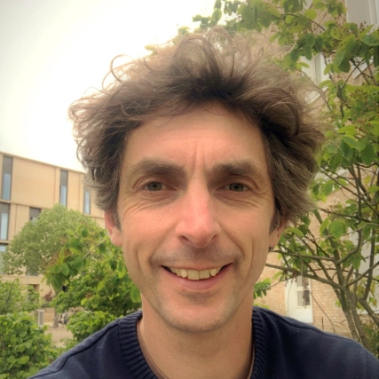

About the programme
This programme aims to inform decision-making by addressing critical gaps in our current understanding of the economic values, benefits and costs that society associates with, and derives from, biodiversity.
The programme funds projects bringing together scientists and economists to explore how economies are embedded in nature, and how nature and biodiversity are integrated into economic models and decision making processes, by:
examining how multiple pluralistic values associated with biodiversity are captured, derived, applied and utilised
investigating the ways in which socioeconomic and ecological systems are interlinked or coupled, and how this can help build and maintain resilience of these systems in response to increasing disturbances
exploring how different evidence-based biodiversity valuation methods (including those beyond monetary valuations) can be embedded within mainstream local and national decision making in the UK, whilst also reflecting upon the needs of future generations and meeting global biodiversity and development targets.
Budget: £6.4 million
Duration: 2021 to 2025
Partners involved: NERC (lead), ESRC (co-funder)
Programme coordinators

Dr Simon Butler

Prof Richard Field

Programme advisory board
Ece Ozdemiroglu
CEO, eftec
Environmental economist, founder and CEO of eftec, working to show how dependent economic activity is on nature and that nature has an economic value beyond what is bought and sold in markets, convener of the ISO working group on Natural Capital Accounting for Organizations, member of the Strategic Advisory Group of the BSI’s Nature Investment Standards and member of the Scotland’s First Minister’s Environment Council.

James Vause
UNEP-WCMC
James is lead economist at the United Nations Environment Programme World Conservation Monitoring Centre (UNEP-WCMC), UNEP’s biodiversity specialist collaboration centre in Cambridge, UK. Prior to joining UNEP-WCMC in 2015, James was a member of the UK Government Economics Service where, from 2008, he lead the analysis of both the UK’s domestic and international biodiversity policy.

Prof. Rosie Hails
Director of Science and Nature, National Trust
Professor Rosie Hails MBE FRSB is an ecologist and Nature and Science Director at the National Trust, holding honorary chairs at Exeter and Cranfield Universities. Her role is to develop the Trust’s nature strategy, research portfolio and advice on science evidence relevant to Trust decision making. She leads teams focusing on Nature Conservation, Environmental Research & Data, Trees & Woodland Creation, Wildlife Management, Land Use, Farming and Public Benefits delivered by Nature. She is also one of three Directors of ‘Renew’ – a Changing the Environment program funded by NERC, and led by the University of Exeter & National Trust Partnership.
She is a member of Defra’s Science Advisory Council, Chair of the Biodiversity Expert Committee, and a member of Defra’s bovine TB partnership. She is also on a number of advisory boards. Formerly she was the Science Director for Biodiversity & Ecosystem Science at the UK Centre for Ecology & Hydrology (2013 – 2018). She was awarded an MBE for services to Environmental Research in 2000.
Prof. Dr. Frank Wätzold
Brandenburg University of Technology Cottbus-Senftenberg
Frank’s research focuses on the economic analysis of strategies and policy instruments in developing and developed countries to conserve biodiversity and preserve ecosystem services. Increasingly, he also works on the economics of climate change adaptation. In cooperation with natural scientists, in particular ecologists, he develops models which integrate knowledge from economics, ecology and/or other natural sciences. Frank has extensive experience in working with policy makers, for example as a member of the scientific advisory board on biodiversity and genetic resources of the German Ministry of Food and Agriculture.